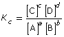

Module 7—Principles of Chemical Equilibrium
 Lesson Summary
Lesson Summary
In Lesson 5 you considered the following questions:
- What is the equilibrium constant?
- What information about an equilibrium is provided in an equilibrium constant?
- In this lesson you learned about the equilibrium constant and the equilibrium law. The equilibrium law is an expression that relates the concentrations of the products to the reactants in a chemical system. The equilibrium law is used to calculate an equilibrium constant. The equilibrium law can be stated as
- , where the balanced chemical equation for the system takes the form aA + bB
 cC +dD
cC +dD
As you found in this lesson, the equilibrium constant is a specific value for a reaction system that is constant for a full range of concentrations. The magnitude of the value for the equilibrium constant provides information about the relative proportions of the products and reactants in the system:
-
if K = 1, then [products] = [reactants]
-
if K > 1, then [products] > [reactants]
-
if K < 1, then [products] < [reactants]